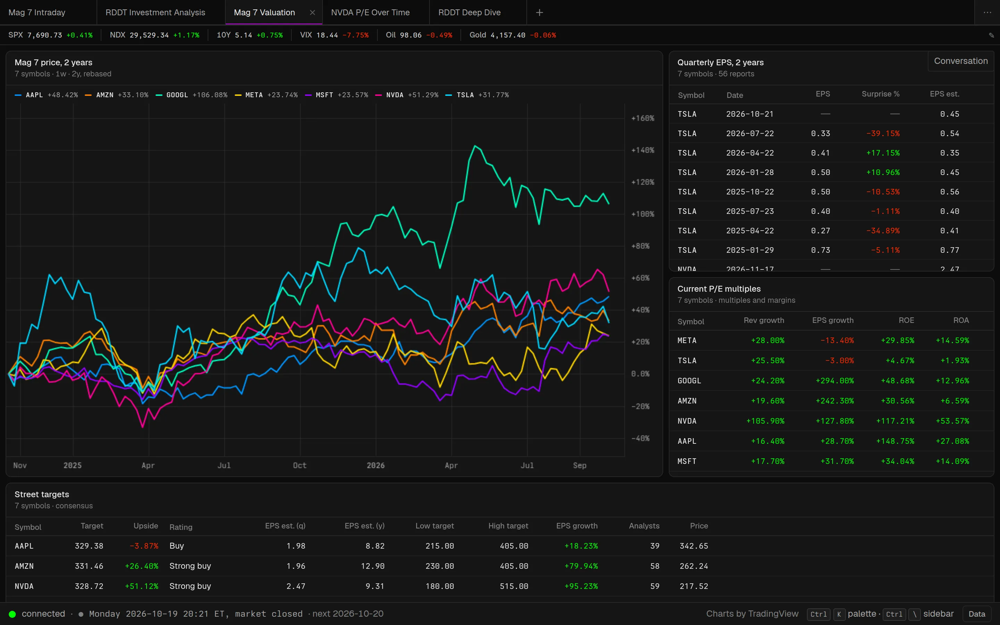
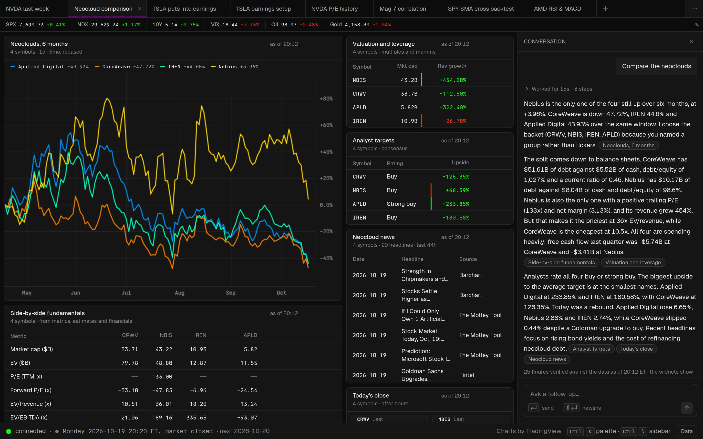
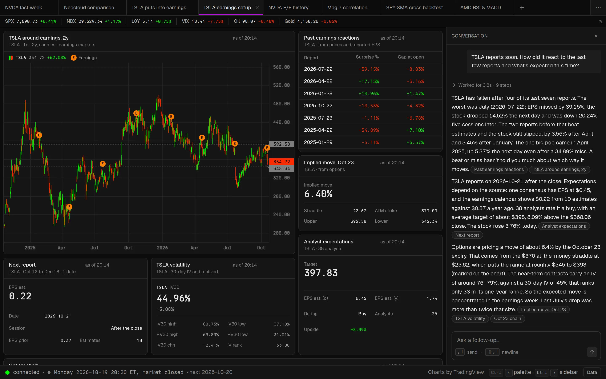
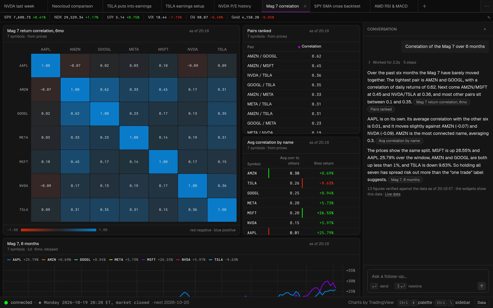
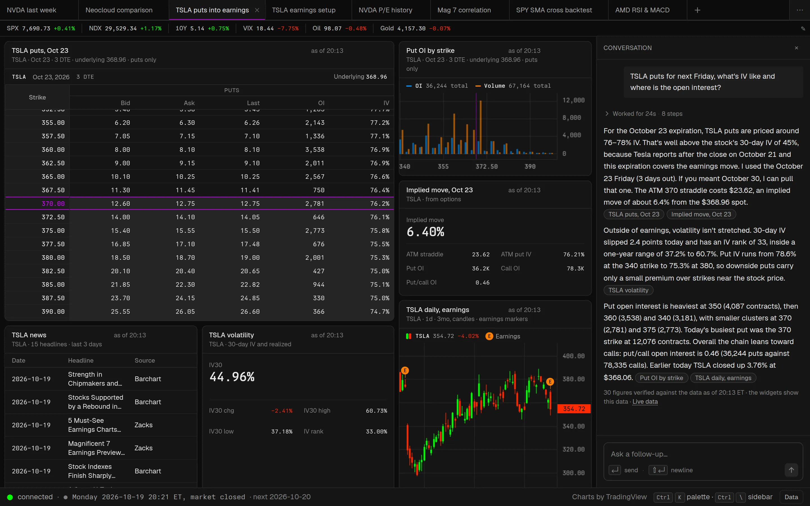
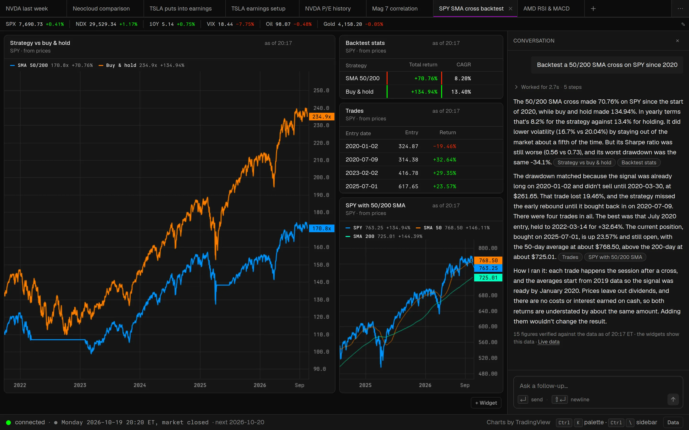
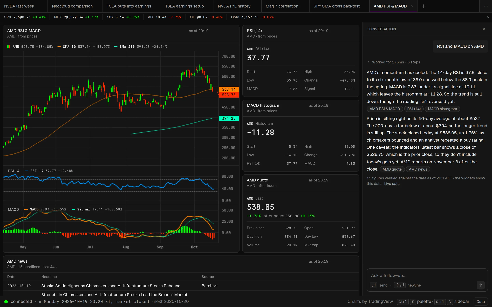

Open sourceMITruns on localhost
The open-source, AI-native terminal for traders.
Ask a question. Get a live workspace of charts, tables and option chains, and an answer that points at them. Runs on your machine, with your keys, on data sources anyone can add.
- MIT licensed
- macOS · Windows · Linux
- No accounts, no backend, no telemetry
- Any route · 24 recipes · 9 presets

Cursor made the code editor conversational without taking the editor away. Open Terminal does the same for the trading terminal.
The prompt builds and rewrites the workspace, and the workspace stays a real terminal: every widget is a query you can open, edit and re-run by hand.
macOS
curl -fsSL https://terminal.spova.ai/Recommended Paste it into Terminal. It puts Open Terminal in Applications and opens it, with no security prompt.
The app is not signed with an Apple Developer ID yet, so the first time you open it from the .dmg, macOS asks you to confirm: System Settings → Privacy & Security → Open Anyway.
Windows
The setup is not signed with a code-signing certificate yet, so SmartScreen says “Windows protected your PC”: choose More info → Run anyway.
Or install it from PowerShell, with no prompt:
irm https://terminal.spova.ai/Linux
curl -fsSL https://terminal.spova.ai/Installs the AppImage, adds Open Terminal to your app menu, and an openterminal command.
The AppImage mounts itself with FUSE (fusermount, from fuse3); the installer tells you if it is missing.
Everything runs inside the app: OpenBB's data providers, Yahoo, and a Python sandbox for pandas. Nothing else to install, and no data keys.
One question in, a working terminal out.
Six prompts we ran end to end on a fresh install with Claude Opus 5.5 on 2026-10-19. Every screenshot is the workspace that prompt built, with its reply beside it, and every figure in every reply was checked against the data.






A real terminal that answers back.
-
ask
Ask, don't click.
“Is NVDA's drop today news or just the market?” becomes four live widgets and a two-sentence diagnosis. A follow-up rewrites the workspace. You never assemble the answer from eight tabs again.
-
verify
Every number is traceable.
The agent cannot type a price. It can only run queries, and the reply links each claim to the widget that shows it. Figures in the reply are checked against the data it saw.
-
local
Open and local.
MIT licensed. One process on localhost plus your browser. No accounts, no hosted backend, no telemetry. Keys never leave the machine.
-
routes
Any route, not a fixed catalog.
Connectors publish their routes as descriptors (808 of OpenBB's 834 are built in); the agent searches them, runs them, and derives new data from them with pandas. Twenty-four recipes cover the common questions.
-
models
Model-agnostic.
Anthropic or OpenAI through the Vercel AI SDK. The default is Claude Opus 5.5; change one line of config to swap it.
-
keys
Works before you add a key.
OpenBB's 20 data providers (SEC, Nasdaq, Cboe, the Federal Reserve, Treasury, OECD, IMF and more) and Yahoo are built in, so prices, options, filings, fundamentals, news and macro work on first run.
Four tools. Every figure checked.
The agent has four tools: find_route searches the catalog of every connector's routes, query runs a recipe or a route, transform runs pandas over data it already has, set_workspace replaces the widgets.
-
You type a prompt.
A question, a ticker, a follow-up. Every prompt rewrites the workspace it is asked in, and every workspace is kept.
-
Queries go to the registry.
A recipe names its routes in order (OpenBB first, Yahoo as the fallback); a route is one endpoint of one connector, its params validated against the connector's descriptor. Results come back as typed columns and rows, annotated with units and cached per route.
-
The agent reads a preview.
The columns with their units, the first rows, and per-symbol stats. Numbers in the reply must come from here, and the server verifies them.
-
It builds the workspace and answers.
Four to six widgets, each rendered by a preset, then a short reply that begins with the answer and links to the widgets it drew on. Widgets keep polling; ask a follow-up and the workspace is rewritten.
TSLA reports soon. How did it react to the last few reports and what's expected this time?
- queryrecipe volatility symbols=TSLA · 1 row5.8 s
- queryrecipe quote symbols=TSLA · 1 row6.0 s
- queryrecipe eps_history symbols=TSLA limit=8 · 8 rows6.3 s
- queryrecipe earnings from=2026-10-12 to=2026-12-18 · 1 row6.6 s
- queryrecipe estimates symbols=TSLA · 1 row7.5 s
- queryrecipe options expiration=2026-10-23 strikes=10 · 40 rows21.0 s
- transformpandas over price, eps · 7 rows21.1 s
- transformpandas over the chain · 1 row32.1 s
- set_workspace7 widgets48.1 s
Connectors 3 in the box
openbbno key (FRED and EIA take a free one)808 of OpenBB Platform's 834 routes, from 20 providers, ported to TypeScript and built in: no Python. A running OpenBB API adds the rest.yahoono keySearch, quotes, charts, option chains and fundamentals.finnhubfree keyQuotes, company news and the earnings calendar.
A connector is one file: descriptors() plus call().
Recipes 24
- search
- quote
- ohlcv
- news
- earnings
- profile
- metrics
- financials
- estimates
- eps_history
- dividends
- insiders
- institutions
- short_interest
- options
- volatility
- calendar
- ipos
- movers
- holdings
- macro
- yield_curve
- index
- screener
Saved queries, as data. Promote any widget to your own.
Presets 9
- price
- compare
- curve
- indicator
- table
- stat
- facts
- chain
- heatmap
Any data whose shape fits renders: candles, rebased lines, yield curves, option chains, heatmaps.
Add a data source in one file.
The whole plugin surface is one function. Register the connector in ~/.openterminal/config.yml and its routes are in the catalog on the next prompt. Tests run against recorded fixtures, never the network.
- Models. Any Anthropic or OpenAI model id. The agent prompt is plain text.
- Recipes and annotations. YAML files. A new question that one route answers is a recipe, not code.
- Presets. A pure function from view options to panes and layers.
import { z } from 'zod'
import { defineConnector, inferFrame, parseDescriptors } from '@openterminal/core'
import descriptors from './descriptors.json' with { type: 'json' }
export default defineConnector({
name: 'shape',
config: z.object({ apiKey: z.string().min(1) }),
descriptors: () => parseDescriptors(descriptors),
call: async (route, params, ctx) => {
const url = `https://api.shape.dev/${route}?symbol=${params.symbol}`
const rows = (await ctx.http.get(url, {
headers: { 'X-Token': ctx.config.apiKey },
signal: ctx.signal,
})) as Record<string, unknown>[]
return inferFrame(rows, { connector: 'shape' }, {
descriptor: descriptors.find((d) => d.route === route),
})
},
})How it compares.
| Open Terminal | Bloomberg | ChatGPT / Perplexity | OpenBB | Instinct | |
|---|---|---|---|---|---|
| Ask a question, get live views | yes | no | no | partly | yes |
| Every number traceable to data | yes | yes | no | yes | unclear |
| Open source | yes (MIT) | no | no | partly | no |
| Runs locally, your keys | yes | no | no | partly | no |
| Add a data source yourself | yes | no | no | yes | no |
| Price | free | ~$25k/yr | $20/mo | free + paid | waitlist |
From the project README. Research and monitoring only: Open Terminal places no orders.
Run it on your machine.
One desktop app for macOS, Windows and Linux, with its data built in. It is open source and not code-signed yet (signing takes paid Apple and Microsoft certificates), so every release publishes its SHA-256 checksums, and the install commands check them for you.
-
Install
macOS and Linuxcurl -fsSL https://terminal.spova.ai/install | sh Windows · PowerShellirm https://terminal.spova.ai/install.ps1 | iex Or get the .dmg, the .exe, the AppImage or the .deb from the download card at the top.
-
Paste a model key
Open it from Applications, the Start menu or your app menu (on Linux,
openterminalworks too). The first screen asks for an Anthropic or OpenAI key, which stays on this machine. Without one you can still build workspaces by hand in the widget editor. -
Ask it something
Type a ticker or a question. No data keys and nothing else to install: OpenBB's providers and Yahoo answer from inside the app.
Free keys add more: Finnhub on the Data page, FRED and EIA in
~/.openterminal/config.yml(how).
- Runs onmacOS 11+, Windows 10+ and Linux, x64 or arm64
- NeedsNothing else: no Python, Node or OpenBB install
- SignedNot yet. Open source, with SHA-256 checksums on every release
- Your data
~/.openterminal: config, workspaces, recipes, the frame cache - UpdateUpdate in the app, or run the install command again
- LicenseMIT
- Full guideQuick start in the README ↗
Other ways
-
Every download
Each release has a .dmg and a .zip for macOS, the setup .exe for Windows, an AppImage and a .deb for Linux, and
SHA256SUMS. To check a file you downloaded:shell · in the download folder shasum -a 256 -c SHA256SUMS --ignore-missing -
For developers on npm soon
npx openterminalHeadless: the server starts and opens
http://localhost:4242in your browser. Needs Node 22 or newer. -
From source
shell · Node 22 and pnpm git clone https://github.com/spovalova/openterminal.git cd openterminal pnpm install pnpm devThe server starts on
:4242, the app onhttp://localhost:5173.
Your terminal. Your keys. Your machine.
Free and open source under the MIT license, for macOS, Windows and Linux. Install it, ask it a question, and open any widget to see the query behind it.